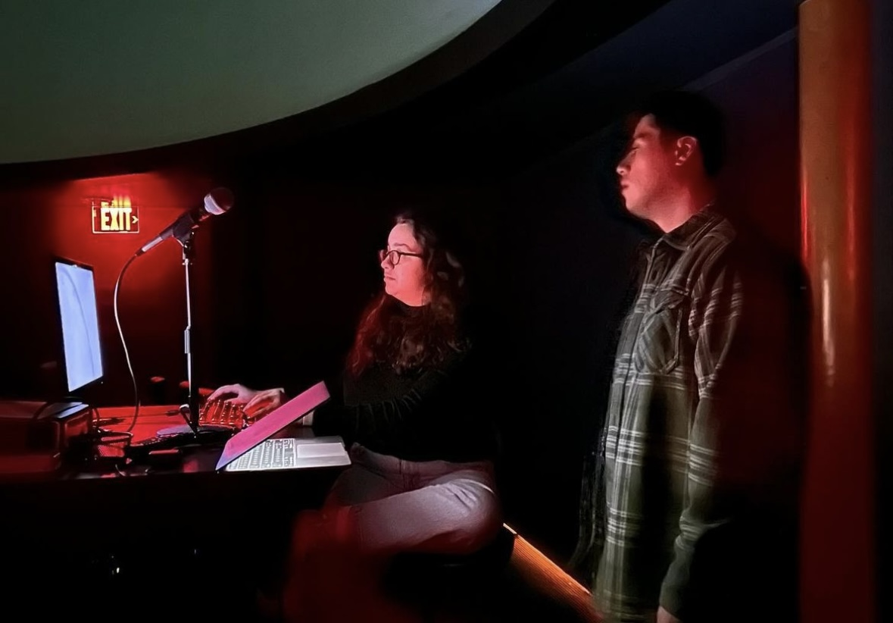

Leitner Planetarium and Observatory Spanish Language Public Nights
I am the creator and organizer of Spanish Language Public Nights at Leitner Planetarium and Observatory in New Haven, Connecticut. Once a semester, the planetarium hosts a night open to the public including planetarium shows in Spanish and night sky telescope viewing. I am currently working on expanding this event to happen three times a semester and develop more materials that can also be used at other facilities for similar events.